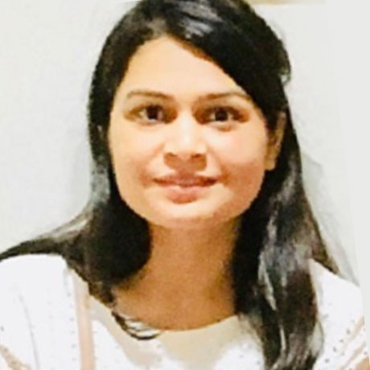
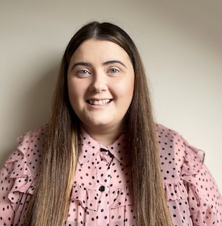
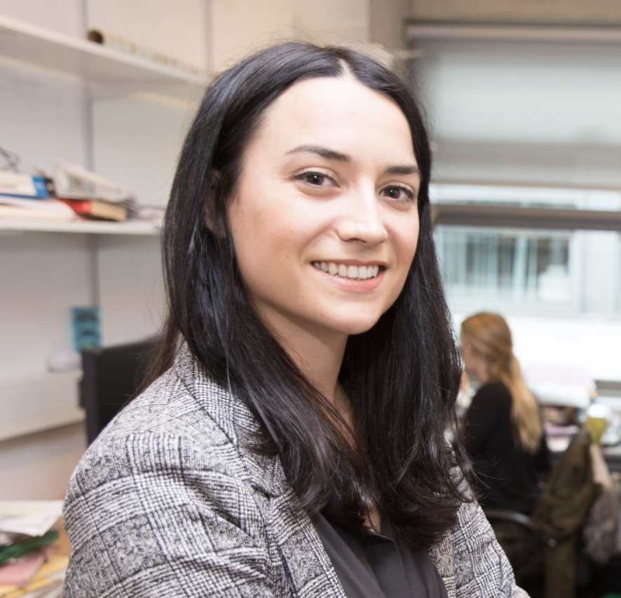
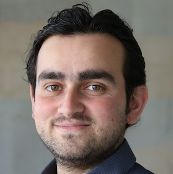

Intelligent Systems Research Centre
Ulster University (Magee Campus)
Seminar Series
Seminars take place from 1-2pm on Wednesdays in person the MS building tea room (MS027) and/or streamed online via Microsoft Teams.
Contact Cian O'Donnell or Louise Gallagher for more information.
Spring 2023
25/01/23: Chethan Pandarinath (Emory University and Georgia Tech)

Webpage
We aim to understand how large populations of neurons in the brain perform computations and represent intention. We use these insights to develop high-performance, robust, and practical assistive devices for people with disabilities and neurological disorders.
Latent variable modeling of neural population dynamics - where do we go from here?
Large-scale recordings of neural activity are providing new opportunities to study network-level dynamics with unprecedented detail. However, the sheer volume of data and its dynamical complexity are major barriers to uncovering and interpreting these dynamics. I will present a machine learning framework we developed, Latent Factor Analysis via Dynamical Systems (LFADS), that enables inference of dynamics from neuronal population spiking activity on single trials and millisecond timescales. I will show how this framework can be applied to data from diverse brain areas, and without regard to behavior. I will also demonstrate extensions that allow recovery of dynamics from two-photon calcium imaging data with surprising precision. Finally, I will discuss our efforts to facilitate comparisons within our field by curating datasets and standardizing model evaluation, including a currently active modeling challenge, the 2021 Neural Latents Benchmark (neurallatents.github.io).
08/02/23: Conor Houghton (University of Bristol)
Webpage
His research interest is in understanding information processing and coding in the brain and, generally, in mathematical and computational approaches to neuroscience.
In-person seminar.
22/02/23: TBC
08/03/23: Muskaan Singh (ISRC, Ulster University)
Webpage
Her research interest is centered around Natural language Processing, which includes everything from computational linguistics and fair bits of computer science, software engineering, artificial intelligence, machine learning, deep learning, intelligent systems, with a particular focus on practical applications.
Automatic Minuting: Extended Reality of the Workplace Meeting Solution.
Project meetings are the cornerstone of collaboration. In academia and industry, meetings are vital for coordination, ensuring coherent progress, and steering development direction. Meetings are where the otherwise abstract concept of an institution comes to life. Considering both incredible advances in speech, text, and vision processing on the one hand and the tremendous complications caused by countermeasures of the Covid-19 pandemic, where most meetings went and mostly remained virtual, aims to redefine the reality of small-to-medium-sized meetings. Specifically, we will advance the automatic processing of text, speech, and visual information in remote or hybrid meetings and empirically validate such changes' effects on participants. Many meetings have multilingual audiences; we aim to facilitate multilingual participation, spearheading this new technical direction. Summarizing meeting contents is at the core of work where the goal is to ease the information and cognitive overload on the participants caused by several meetings and frequent context-switching. Leveraging multimodal information from virtual meetings aims to facilitate diverse and inclusive participation (overcome speech, language, and vision barriers) in virtual meetings. In this research, I envisage building upon the success of my earlier relevant work in this direction to create an extended reality workplace meeting solution.
22/03/23: Leeanne Lindsay (ISRC, Ulster University)
Webpage
In-person seminar.
05/04/23: no seminar
19/04/23: Claire Gillan (Trinity College Dublin)
Webpage
The Gillan Lab at Trinity College Dublin uses cognitive neuroscience to better understand, predict and treat mental health problems, tackling issues that are psychiatric, developmental, neurological and associated with advancing age.
Online seminar.
03/05/23: Shane Harrigan (ISRC, Ulster University)
Webpage
In-person seminar.
17/05/23: Scott Fischaber (Analytics Engines)
Webpage
In-person seminar.
31/05/23: Abdoreza Asadpour (ISRC, Ulster University)

Webpage
Towards a Dynamic Causal Model for the Effects of Tinnitus on Brain Event-Related Potentials and Decision Confidence.
In-person seminar.14/06/23: TBC
28/06/23: Shirin Dora (Loughborough University)
Webpage
My research interests include energy-efficient AI for edge-computing. In particular, I focus on bio-inspired mechanisms for learning which include spiking neural networks and predictive coding. On the applied side, I am interested in research on autonomous cars and UAVs.
Online seminar.
Winter 2022
11/11/22: Mahnaz Arvaneh (University of Sheffield)
Webpage
Implicit brain-machine interactions in navigation and target identification tasks.
There is a performance bottleneck in many brain-computer interfaces, as users are required to control each low-level action in order to achieve a high-level goal. For example, users may need to consciously generate brain signals to move a cursor, prosthesis, or assistive robot, step-by-step to a desired location. This places a high mental workload on the user. Recent studies have shown the possibility of using "cognitive probing" to reduce the mental burden of current BCIs. This is achieved by monitoring brain signals generated spontaneously while users merely observe the machine's actions, and using these signals as feedback to help the machine perform the desired task. These studies have mostly been based on distinguishing correct actions from erroneous ones, by detecting error-related potentials. In this talk we will discuss the possibility of obtaining more detailed information from passive brain signals than simply whether an action was correct or erroneous. Bringing these advances together, we will present the foundation of a new frame-work for detailed implicit communication between brain and machine, by embedding the real-time EEG classification outputs in a dynamic probabilistic model of the most likely target loci based on the previous actions of the robot. This facilitates semi-autonomous robot control, through a more efficient and user-friendly brain-
machine interaction.
23/11/22: Saugat Bhattacharyya (ISRC, Ulster University)
Webpage
Augmenting Decision-making capabilities using Brain-Computer Interfacing Technology.
Billions of decisions are made every day in the world. Many of these decisions, particularly in the armed forces, are critical, making a mistake resulting in extremely adverse outcomes, including loss of lives. Groups typically can make better decisions than individuals. However, in some circumstances (e.g., in the presence of a strong leader), communication between members can have a detrimental effect on decision quality. Neural signals have been reported to be related to decision-making processes and it is shown to negate the effects of communication bias in decisions. However, brain signals, especially one recorded using Electroencephalography (EEG), are extremely noisy, which makes it very hard to reliably provide information on (or aid) individual decisions. Nonetheless, it is plausible to think that collective decisions could be aided and enhanced by integrating decisions and their neural correlates across the members of a group.
In this talk, Dr Saugat Bhattacharyya will give an overview of how group decision-making aided by collaborative Brain Computer Interfaces (cBCIs) is better than traditional means of making group decisions and how it may be suited for circumstances where decisions are based on a rapid and accurate assessment of the environment and where fast reactions are needed. This talk will cover the journey and achievements of cBCIs supported decision support system over the last few years and will briefly introduce concepts on teaming humans with machines (virtual humans) to augment critical decision-making by building trust and co-operation between the two entities.
07/12/22: Pingfan Song (University of Cambridge)
Webpage
Trustworthy AI for medical and health research.
Artificial Intelligence (AI) systems are increasingly being deployed in society, it is critical to ensure that these systems are trustworthy, in particular in high-stake real-world applications, such as the medical and health domains. There has been growing interest to develop and deploy AI models and algorithms that are not only accurate, but also interpretable/explainable, fair, privacy-preserving, causal, and robust. This talk will focus on frontier research in this timely, trending, and important cross-disciplinary research domain, and provide an overview to cutting-edge knowledge, technology, and findings.